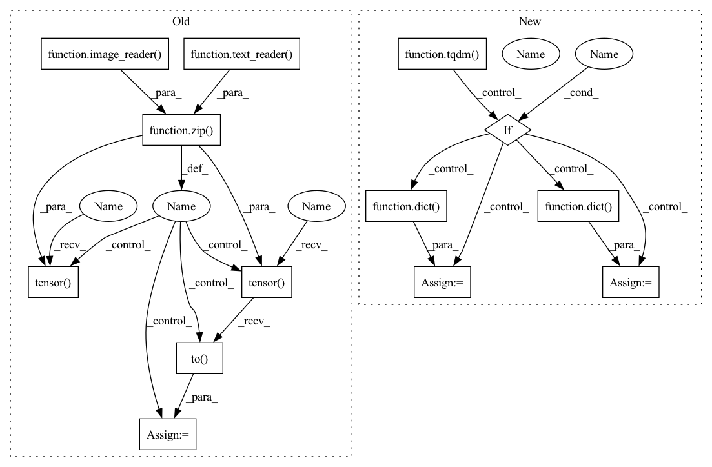

Pattern ID :13491

Before Change
total_loss = 0.
total_samples = 0.
for emb_images, emb_text in zip(image_reader(batch_size=batch_size, start=start, end=end),
text_reader(batch_size=batch_size, start=start, end=end)):
emb_images_tensor = torch.tensor(emb_images[0]).to(device)
emb_text_tensor = torch.tensor(emb_text[0]).to(device)
batches = emb_images_tensor.shape[0]
After Change
total_loss = 0.
total_samples = 0.
for image_embeddings, text_data in tqdm(dataloader):
batches = image_embeddings.shape[0]
input_args = dict(image_embed=image_embeddings)
if text_conditioned:
input_args = dict(**input_args, text = text_data)
else:
input_args = dict(**input_args, text_embed=text_data)
loss = model(**input_args)
total_loss += loss * batches
In pattern: SUPERPATTERN
Frequency: 3
Non-data size: 13
Instances
Fragment ID: 45476657
Project Name: lucidrains/dalle2-pytorch
Commit Name: 4a59dea4cfad72176f35700296adfbc28e205598
Time: 2022-05-15
Author: 51308183+nousr@users.noreply.github.com
File Name: train_diffusion_prior.py
M Class Name: AnonimousClass
N Class Name: AnonimousClass
M Method Name: eval_model(5)
N Method Name: eval_model(9)
M Parent Class:
N Parent Class:
M File Name: train_diffusion_prior.py
N File Name: train_diffusion_prior.py
M Start Line: 41
M End Line: 57
N Start Line: 49
N End Line: 61
'>
Before Change
total_loss = 0.
total_samples = 0.
for emb_images, emb_text in zip(image_reader(batch_size=batch_size, start=start, end=end),
text_reader(batch_size=batch_size, start=start, end=end)):
emb_images_tensor = torch.tensor(emb_images[0]).to(device)
emb_text_tensor = torch.tensor(emb_text[0]).to(device)
batches = emb_images_tensor.shape[0]
After Change
total_loss = 0.
total_samples = 0.
for image_embeddings, text_data in tqdm(dataloader):
batches = image_embeddings.shape[0]
input_args = dict(image_embed=image_embeddings)
if text_conditioned:
input_args = dict(**input_args, text = text_data)
else:
input_args = dict(**input_args, text_embed=text_data)
loss = model(**input_args)
total_loss += loss * batches
'>
Fragment ID: 45476656
Project Name: lucidrains/dalle2-pytorch
Commit Name: 4a59dea4cfad72176f35700296adfbc28e205598
Time: 2022-05-15
Author: 51308183+nousr@users.noreply.github.com
File Name: train_diffusion_prior.py
M Class Name: AnonimousClass
N Class Name: AnonimousClass
M Method Name: eval_model(5)
N Method Name: eval_model(9)
M Parent Class:
N Parent Class:
M File Name: train_diffusion_prior.py
N File Name: train_diffusion_prior.py
M Start Line: 41
M End Line: 57
N Start Line: 49
N End Line: 61
'>
Before Change
for _ in range(epochs):
for emb_images,emb_text in zip(image_reader(batch_size=batch_size, start=0, end=train_set_size),
text_reader(batch_size=batch_size, start=0, end=train_set_size)):
trainer.train()
emb_images_tensor = torch.tensor(emb_images[0]).to(device)
emb_text_tensor = torch.tensor(emb_text[0]).to(device)
loss = trainer(text_embed = emb_text_tensor, image_embed = emb_images_tensor)
// Samples per second
After Change
for _ in range(epochs):
for image, text in tqdm(train_loader):
diffusion_prior.train()
input_args = dict(image_embed=image)
if dp_condition_on_text_encodings:
input_args = dict(**input_args, text = text)
else:
input_args = dict(**input_args, text_embed=text)
loss = trainer(**input_args)
// Samples per second
'>
Fragment ID: 45476688
Project Name: lucidrains/dalle2-pytorch
Commit Name: 4a59dea4cfad72176f35700296adfbc28e205598
Time: 2022-05-15
Author: 51308183+nousr@users.noreply.github.com
File Name: train_diffusion_prior.py
M Class Name: AnonimousClass
N Class Name: AnonimousClass
M Method Name: train(32)
N Method Name: train(29)
M Parent Class:
N Parent Class:
M File Name: train_diffusion_prior.py
N File Name: train_diffusion_prior.py
M Start Line: 200
M End Line: 343
N Start Line: 179
N End Line: 369
'>
Before Change
tstart = train_set_size
tend = train_set_size+NUM_TEST_EMBEDDINGS
for embt, embi in zip(text_reader(batch_size=NUM_TEST_EMBEDDINGS, start=tstart, end=tend),
image_reader(batch_size=NUM_TEST_EMBEDDINGS, start=tstart, end=tend)):
// make a copy of the text embeddings for shuffling
text_embed = torch.tensor(embt[0]).to(device)
text_embed_shuffled = text_embed.clone()
// roll the text embeddings to simulate "unrelated" captions
rolled_idx = torch.roll(torch.arange(NUM_TEST_EMBEDDINGS), 1)
text_embed_shuffled = text_embed_shuffled[rolled_idx]
text_embed_shuffled = text_embed_shuffled / \
text_embed_shuffled.norm(dim=1, keepdim=True)
test_text_shuffled_cond = dict(text_embed=text_embed_shuffled)
// prepare the text embedding
text_embed = text_embed / text_embed.norm(dim=1, keepdim=True)
test_text_cond = dict(text_embed=text_embed)
// prepare image embeddings
test_image_embeddings = torch.tensor(embi[0]).to(device)
test_image_embeddings = test_image_embeddings / \
test_image_embeddings.norm(dim=1, keepdim=True)
// predict on the unshuffled text embeddings
predicted_image_embeddings = diffusion_prior.p_sample_loop(
After Change
cos = nn.CosineSimilarity(dim=1, eps=1e-6)
for test_image_embeddings, text_data in tqdm(dataloader):
// we are text conditioned, we produce an embedding from the tokenized text
if text_conditioned:
text_embedding, text_encodings, text_mask = diffusion_prior.clip.embed_text(
text_data)
text_cond = dict(text_embed=text_embedding,
text_encodings=text_encodings, mask=text_mask)
else:
text_embedding = text_data
text_cond = dict(text_embed=text_embedding)
// make a copy of the text embeddings for shuffling
text_embed_shuffled = text_embedding.clone()
'>
Fragment ID: 45476636
Project Name: lucidrains/dalle2-pytorch
Commit Name: 4a59dea4cfad72176f35700296adfbc28e205598
Time: 2022-05-15
Author: 51308183+nousr@users.noreply.github.com
File Name: train_diffusion_prior.py
M Class Name: AnonimousClass
N Class Name: AnonimousClass
M Method Name: report_cosine_sims(3)
N Method Name: report_cosine_sims(6)
M Parent Class:
N Parent Class:
M File Name: train_diffusion_prior.py
N File Name: train_diffusion_prior.py
M Start Line: 63
M End Line: 96
N Start Line: 73
N End Line: 119